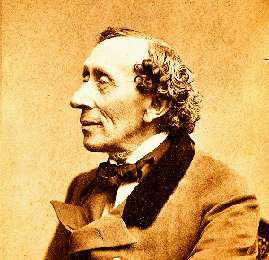

Борис Акунин
Мой календарь
Сегодня мы в гостях у сказки. Вернее у самого великого сказочника всех времен. 2 апреля родился Ханс Кристиан Андерсен.
Сказочники обычно люди очень странные, потому что витают в очень странном мире. Что-то там подглядывают, подслушивают, делятся с нами, когда мы еще маленькие и всему верим. Потом мы вырастаем, верить в чудеса перестаем, но что-то важное в нас остается. Вам наверняка случалось общаться с людьми, которым в детстве не читали про Дюймовочку и Русалочку, Голого Короля и Снежную Королеву, Гадкого Утенка и Принцессу-на-Горошине. Вряд ли это общение было приятным.
В жизни Андерсен был нелепым, нескладным и несносным. Вероятно, не без аутизма. Он вечно влюблялся в женщин, которые не отвечали ему взаимностью, и дожил до старости, так и не узнав любви. Зато про каждую свою несостоявшуюся возлюбленную написал сказку.
Про Андерсена сохранилось множество смешных и трогательных историй. Мне больше всего нравятся две.
Смешная.
Андерсен ужасно любил прозу Чарльза Диккенса. Мечтал лично познакомиться. Однажды пришел в гости, и так ему у Диккенсов понравилось, что не захотел уезжать. Англичане люди учтивые, но 5 (пять) недель спустя они все-таки попросили датчанина отправляться восвояси. Андерсен потом ужасно удивлялся, почему Диккенс не отвечает на его письма.
Трогательная.
Когда Андерсен умирал и вдумчиво составлял церемониал своих похорон, он велел композитору сочинить музыку, удобную для маленького шага, потому что наверняка придет много детей.
Сегодня можно побыть немножко Андерсеном. Помечтать о чем-нибудь сказочном, а потом маленькими шагами пойти в гости к тому, кто вам очень нравится, и долго-долго не уходить.